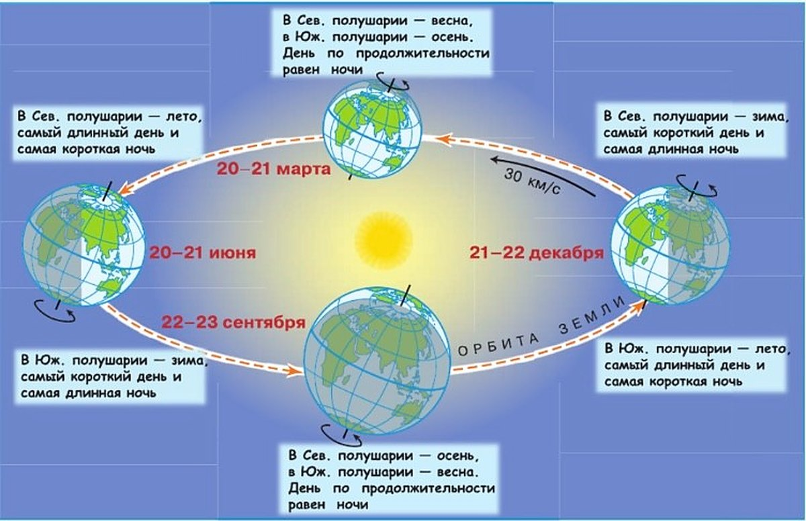
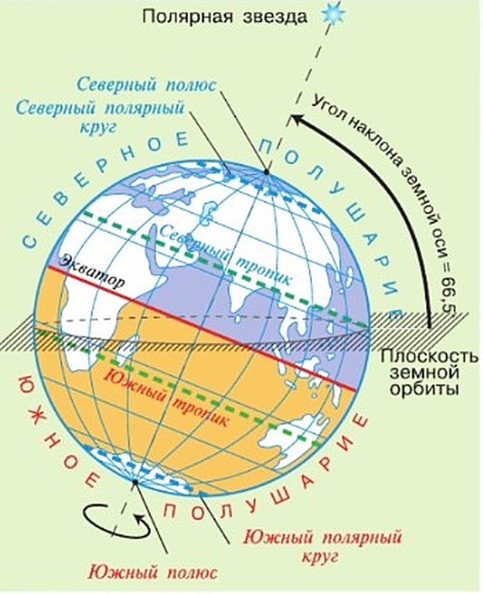

Как движется Земля вокруг своей оси?
Земля, как и другие планеты, вращается вокруг своей оси. Земная ось — это воображаемая линия через центр земного шара.
Ось наклонена к плоскости орбиты — так называют плоскость, в которой Земля обращается вокруг Солнца. Угол наклона — 66,5°. Северным концом ось смотрит на Полярную звезду.
Там, где ось выходит на поверхность Земли, находятся Северный полюс и Южный полюс (рис. 25).
В какую сторону вращается Земля? Если смотреть на неё из космоса со стороны Полярной звезды — против часовой стрелки, то есть с запада на восток.
День и ночь. Вращаясь, Земля поворачивается к Солнцу разными сторонами. В том полушарии, которое обращено к Солнцу, — день, а в том, что в тени, — ночь.
Один оборот вокруг оси Земля делает примерно за 24 часа. Это сутки: за них день и ночь сменяют друг друга.
Полюсы — особые точки. Когда Земля вращается, они не перемещаются. На Северном полюсе, куда ни посмотри, везде юг, а на Южном — везде север.
Земля, как и другие планеты, вращается вокруг своей оси. Земная ось наклонена под углом к плоскости орбиты, по которой наша планета обращается вокруг Солнца. Этот угол составляет 66,5°. Северным концом земная ось направлена на Полярную звезду. Земная ось — это воображаемая линия, которая проходит через центр земного шара. В точках, где ось пересекается с поверхностью Земли, располагаются Северный полюс и Южный полюс (рис. 25).
Представьте, что вы смотрите на нашу планету из космоса со стороны Полярной звезды. Вы увидите вращающийся вокруг себя (своей оси) против часовой стрелки (с запада на восток) земной шар.
Вращающаяся Земля поворачивается к Солнцу разными сторонами. В том полушарии, которое обращено к Солнцу, — день, а в том, которое в тени, — ночь. Один оборот вокруг своей оси Земля совершает примерно за 24 ч. За этот отрезок времени (мы называем его сутками) на Земле день и ночь сменяют друг друга.
Северный и Южный полюсы — уникальные точки нашей планеты. Они не перемещаются при осевом вращении Земли. На Северном полюсе, куда ни посмотри, повсюду будет юг, а на Южном полюсе — север.
1. Когда в Москве день, где-то на Земле обязательно ночь. Почему?
2. Летним вечером в Москве ещё светло, а у Насти в Тольятти уже темнеет. Почему у неё раньше?
3. Почему учебник называет полюсы «уникальными точками»?
Как движется Земля вокруг Солнца?
Одновременно Земля обращается вокруг Солнца (рис. 25).
Её орбита — эллипс, то есть овал. Солнце стоит не точно в центре, а немного сбоку. Поэтому Земля то приближается к Солнцу, то удаляется от него.
Ближе всего — в начале января, вскоре после Нового года: около 147 млн км. А дальше всего — в начале июля: до 152 млн км.
Выходит, в январе, когда у нас зима, Земля ближе всего к Солнцу. Значит, зима бывает не из-за расстояния. Почему — узнаешь в § 11.
Один виток по орбите Земля делает примерно за 365 суток и 6 часов. За это время сменяются времена года.
Откуда 29 февраля? Люди договорились считать год равным 365 дням. А лишние 6 часов копятся: за четыре года набираются целые сутки. Так получается високосный год — в нём 366 дней, а в феврале 29 дней.
Два движения сразу. Вращение вокруг своей оси называют осевым, а вокруг Солнца — орбитальным. Земля делает их одновременно.
Одновременно Земля обращается вокруг Солнца (см. рис. 25). Земная орбита имеет форму овала (эллипса), причём Солнце немного смещено по отношению к его центру. Из-за этого Земля то приближается к Солнцу, то удаляется от него. Причём ближе всего к нему (примерно 147 млн км) Земля оказывается в начале января, вскоре после Нового года. Напротив, в середине нашего лета — в начале июля — Земля наиболее удалена от Солнца — до 152 млн км.
Земля совершает один виток по орбите примерно за 365 суток и 6 ч. За этот отрезок времени на нашей планете сменяются времена года (см. рис. 25). Люди договорились считать год равным 365 дням.
Раз в четыре года, когда из оставшихся шести часов набираются дополнительные сутки, наступает високосный год. В високосном году 366 дней, а в феврале этого года 29 дней.
На полях учебника: «Движение Земли вокруг своей оси — осевое, вокруг Солнца — орбитальное». «Земля одновременно вращается вокруг Солнца и вокруг своей оси».

Движение Земли вокруг своей оси — осевое, вокруг Солнца — орбитальное. Земля одновременно вращается вокруг Солнца и вокруг своей оси.
Земля вращается вокруг своей оси с запада на восток. Одновременно Земля обращается вокруг Солнца по орбите в том же направлении.
вокруг своей оси · примерно 24 ч — сутки · день сменяется ночью
вокруг Солнца · 365 суток и 6 ч — год · сменяются времена года
Сутки — от вращения вокруг оси, год — от витка вокруг Солнца.
4. В § 8 было: от Земли до Солнца в среднем около 150 млн км. А здесь — 147 и 152. Это не противоречие?
5. Почему високосный год бывает именно раз в четыре года, а не раз в два или в пять?
6. Сколько раз Земля повернётся вокруг своей оси, пока сделает один виток вокруг Солнца?
Шаг за шагом. Работаем с рисунком
В географии и других естественных науках без графических изображений не обойтись: рисунков, чертежей, фото. С рисунком легче разобраться в тексте, проверить себя и узнать что-то новое.
Разбери рисунок 26 — на нём схема земного шара.
1. Найди земную ось. Она показана пунктиром.
2. Найди Северный и Южный полюсы. Где на Земле они находятся?
3. Найди, где и как показана плоскость земной орбиты. Как к ней расположена земная ось?
4. Убедись: северным концом ось направлена на Полярную звезду.
5. Найди, где показано, в какую сторону вращается Земля вокруг оси.
На рисунке есть и другие линии. Они тоже воображаемые и отличаются тем, что лежат на разном расстоянии от полюсов.
6. Красная линия — экватор. Он проходит посередине, на равном расстоянии от обоих полюсов, и делит земной шар на Северное и Южное полушария.
7. Зелёные и синие пунктиры — тропики и полярные круги. Они идут параллельно экватору. Запомни их — дальше они очень понадобятся.
В изучении географии и естественных наук незаменимы графические изображения (рисунки, чертежи, фото и т. д.). С помощью рисунка можно лучше и быстрее разобраться в тексте, проверить себя, получить дополнительные сведения, т. е. хорошо усвоить новый материал.
Разберём рисунок 26, на котором вы видите схематически изображённый земной шар.
1. Найдите на рисунке земную ось. Она показана пунктиром.
2. Найдите Северный и Южный полюсы. В каких местах Земли они находятся?
3. Найдите, где и как показана плоскость земной орбиты. Как расположена по отношению к ней земная ось?
4. Убедитесь, что земная ось направлена на Полярную звезду северным концом.
5. Найдите, где показано направление осевого вращения Земли. Каково оно?
Вы видите на рисунке и другие линии. Они тоже воображаемые и отличаются друг от друга тем, что находятся на разном удалении от полюсов.
6. Красная линия — экватор, он проходит посередине на равном расстоянии от обоих полюсов и разделяет земной шар на Северное и Южное полушария.
7. Зелёные и синие пунктирные линии — это тропики и полярные круги, проходящие параллельно экватору. Запомните их. Впоследствии они нам очень понадобятся.
Полезный совет: вы можете проверить себя, если воспроизведёте рисунок на отдельном листке, не заглядывая в учебник.

Полезный совет учебника: проверь себя — нарисуй рисунок на отдельном листке, не заглядывая в учебник. Начни со схемы попроще — она выше.
7. Чем экватор отличается от тропиков и полярных кругов? А что у них общего?
Итоги параграфа
- На карте полушарий найдите: Северный и Южный полюсы, экватор, тропики, полярные круги.
- Воображаемая прямая, проходящая через центр Земли, вокруг которой вращается Земля, называется: а) полюсом; б) экватором; в) земной осью.
- Один оборот вокруг Солнца Земля совершает: а) за 365 суток и 6 ч; б) за 24 ч; в) за 29 суток.
- В каком направлении вращается Земля вокруг своей оси; по орбите?
- С какой скоростью Земля обращается по орбите? Где в параграфе вы нашли эту информацию?
- Представьте, что вы с друзьями оказались на Северном полюсе. Часы показывают 22 ч. Над головой у вас Полярная звезда. Где будет эта звезда через 6 ч?
- Сформулируйте и запишите определение, заполнив пропуск: Экватор — … на одинаковом расстоянии от полюсов.
- В тетради схематически изобразите земной шар. Нарисуйте и подпишите экватор, тропики, полярные круги. Покажите Северный и Южный полюсы.
- Как отражается движение Земли вокруг Солнца на изменении вашего режима дня в течение года?
Проверь себя
Нажимай по очереди — от января к декабрю. Подсказки — рис. 25 и схема «Орбита Земли сверху».
День сменяется ночью
Земля поворачивается к Солнцу разными сторонами.
Сутки — примерно 24 часа
Один оборот вокруг своей оси — сутки.
Год — 365 суток и 6 часов
Один виток по орбите.
Сменяются времена года
За один виток вокруг Солнца сменяются времена года.
Бывает 29 февраля
Лишние 6 часов от витка вокруг Солнца копятся за четыре года.
Земля то ближе к Солнцу, то дальше
Орбита — эллипс, Солнце немного смещено от центра.
У Насти в Тольятти утро наступает раньше
Земля вращается вокруг оси с запада на восток — восточнее утро раньше.
Куда ни посмотри — везде юг
Севернее уже некуда.
Куда ни посмотри — везде север
Южнее уже некуда.
Над головой — Полярная звезда
Туда направлен северный конец земной оси.
На равном расстоянии от обоих полюсов
Экватор проходит посередине.
Делит Землю на Северное и Южное полушария
Экватор — граница полушарий.
Антарктида
Южный полюс — в Антарктиде (§ 5).
1. В какую сторону вращается Земля вокруг своей оси?
2. За сколько Земля делает один оборот вокруг своей оси?
3. Когда Земля ближе всего к Солнцу?
4. Сколько дней в високосном году?
5. Под каким углом земная ось наклонена к плоскости орбиты?
6. Что делит земной шар на Северное и Южное полушария?
Расскажи вслух
Как Земля вращается вокруг своей оси
- Земная ось — воображаемая линия через центр Земли; наклон к плоскости орбиты 66,5°, северный конец — на Полярную звезду.
- Вращение с запада на восток (против часовой стрелки со стороны Полярной звезды), оборот за 24 ч — сутки.
- Полушарие, обращённое к Солнцу, — день, в тени — ночь; полюсы не перемещаются.
Как Земля движется вокруг Солнца
- Орбита — эллипс, Солнце немного смещено от центра.
- Ближе всего (147 млн км) — в начале января, дальше всего (152 млн км) — в начале июля.
- Один виток — 365 суток и 6 ч; за это время сменяются времена года.
Год и високосный год
- Люди договорились считать год равным 365 дням.
- Оставшиеся 6 часов за четыре года складываются в сутки.
- Високосный год — 366 дней, в феврале 29 дней; следующий — 2028.
Линии на глобусе
- Экватор — посередине между полюсами, делит Землю на Северное и Южное полушария.
- Тропики и полярные круги — воображаемые линии параллельно экватору.
- Они на разном удалении от полюсов: полярные круги ближе к полюсам.